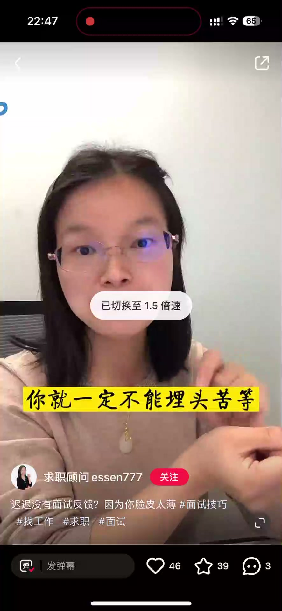
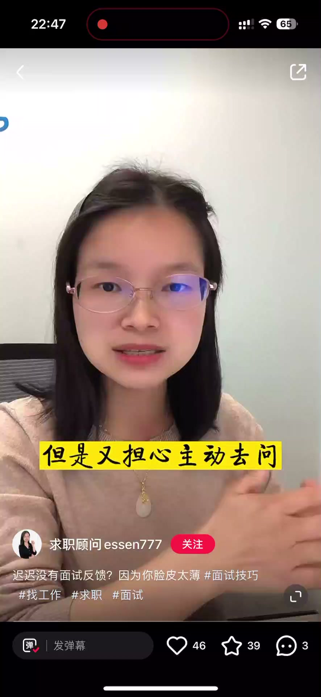
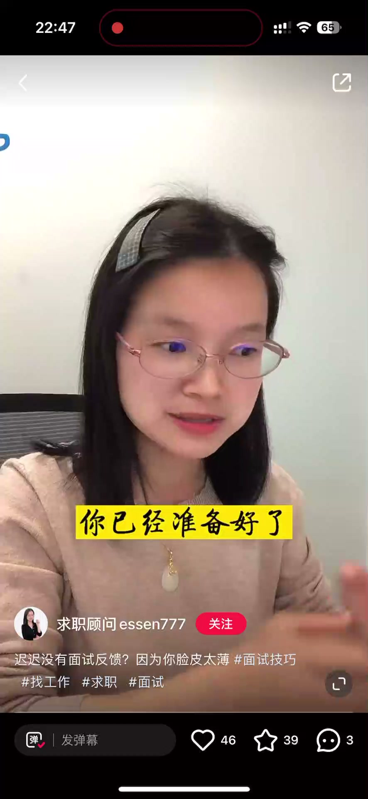
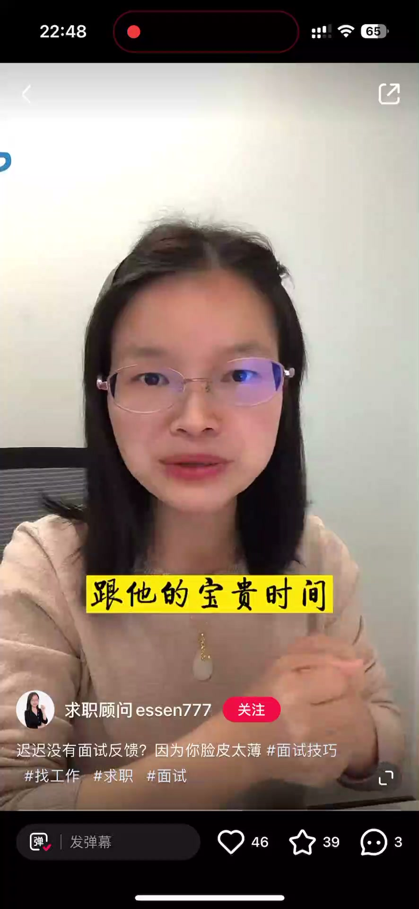
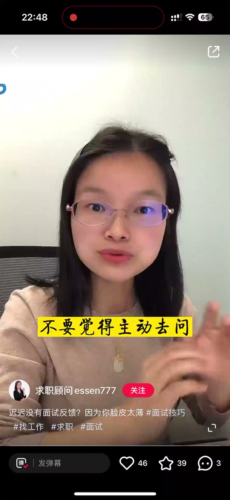

内容要点
一段 1 分钟的求职技巧课：心仪的公司迟迟不给面试反馈，很多求职者担心主动去问会掉价，在纠结徘徊中错过好机会。视频给出「好工作一定要主动出击」的三个方法——远程面试中主动表明准备状态、面试快结束时主动感谢并争取反馈与联系方式、面试后两三天主动询问结果，并说明主动追问其实是在传递「我很重视这个机会」。
知识结构
心仪公司迟迟没给面试反馈，很多人很矜持、怕主动问会掉价，反复纠结要不要问、什么时候问、怎么问。好工作一定不是等来的，要主动出击。
方法一：远程面试中主动向面试官表明准备状态，让他感受到你很重视这场面试；方法二：面试快结束时主动感谢面试官，如果特别重视这次机会，再次表达重视、希望尽快有反馈，互动不错时抓住机会问联系方式。
面试结束两三天后没收到反馈，一定要主动问结果，别觉得会掉价；与机会失之交臂才是最大损失。恰当时候主动追问，就是在告诉对方我很重视这场面试、这个机会。
好工作是主动争取来的：远程面试表明准备状态、面试结束主动致谢并争取反馈、面试后两三天主动问结果——主动不是掉价，是在传递重视。
00:00-00:15被动等待：好机会越离越远
开场点题：心仪的公司迟迟没有给面试反馈，你就一定不能来头等着，越被动等待，好机会离你越远。
讲者观察到：辅导过那么多学员，发现很多同学在求职时都很矜持，原本十拿九稳的面试迟迟没有下文，心里很想知道结果，又担心主动去问会自掉身价，就在反复纠结徘徊要不要去问、什么时候去问、该怎么去问。好工作一定不是等来的，需要我们主动出击。

00:16-01:06三个主动出击的方法
方法一：如果是远程面试，它的影响其实还蛮大。你通过主动向面试官表明你的准备状态，让面试官感受到你其实非常重视这场面试、非常重视这位面试官。
方法二：面试快结束的时候，一定要主动感谢面试官，感谢他的分享和宝贵时间。如果你特别重视这次机会，还可以再次表达你对这个机会很重视，希望尽快有一个面试反馈；同时如果前期面试的互动还挺不错，一定要抓住机会主动询问面试官，方便加一下他的联系方式。
方法三：面试结束之后的两三天，如果你仍然没有收到面试反馈，一定要主动去问结果。不要觉得主动去问会掉价，你要想，与机会失之交臂这才是最大的损失。在恰当的时候主动去追问结果，其实就是在告诉对方：我很重视咱们这场面试、我很重视这个机会。




完整转录（52段）
以下文本由 Whisper medium 模型自动转录，可能存在少量识别误差，已尽可能修正。
信仪的公司迟迟没有给面试反馈
你就一定不能来头不等
你越被动等待
好机会离你会越来越远
辅导过那么多学员
我发现好多同学在求职的时候都很矜持
原本十拿九稳的面试
迟迟没有下完之后
很想知道结果
但是又担心主动去问
会自吊身家
就在反复纠结徘徊
要不要去问
什么时候去问
该怎么去问
好工作一定不是等来的
需要我们主动出击
今天就来分享
争取好工作
该怎么主动的三种方法
先在后看
首先如果说是远程面试
但是它的影响其实还蛮大
你通过主动向面试官表明你的准备状态
让面试官能够感受到
其实你是非常重视这场面试
非常重视这位面试官
第二
面试快结束的时候
一定要主动感谢面试官
感谢面试官的面试分享
跟他的宝贵时间
如果你特别重义这次机会
还可以再次去表达一下
你对这个机会很重视
希望尽快有一个面试反馈
同时如果说前期面试的互动还挺不错
那这个时候一定要抓住机会
主动的去询问面试官
方便加一下他的联系方式
第三
面试结束之后的两三天
如果说你仍然是没有收到面试反馈
一定要主动去问结果
不要觉得主动去问自己会掉价
你要想与机会实质交辟
这才是最大的损失
在恰当的时候主动去追问结果
其实就是在告诉对方
我很重视咱们这场面试
我很重视这个机会
在最后的决定